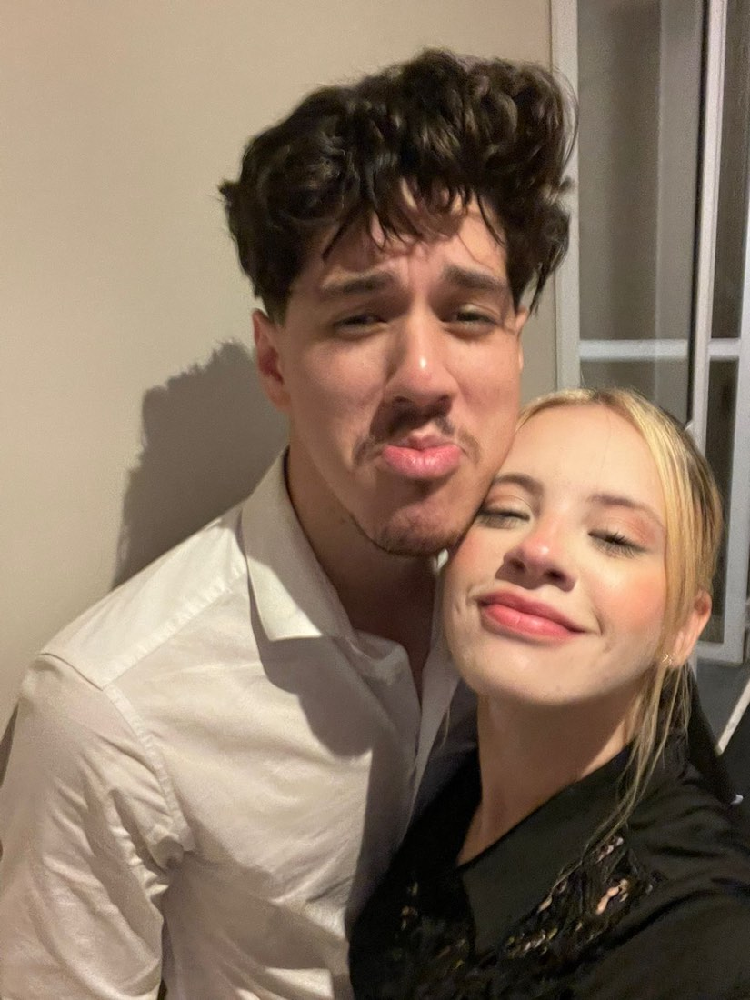
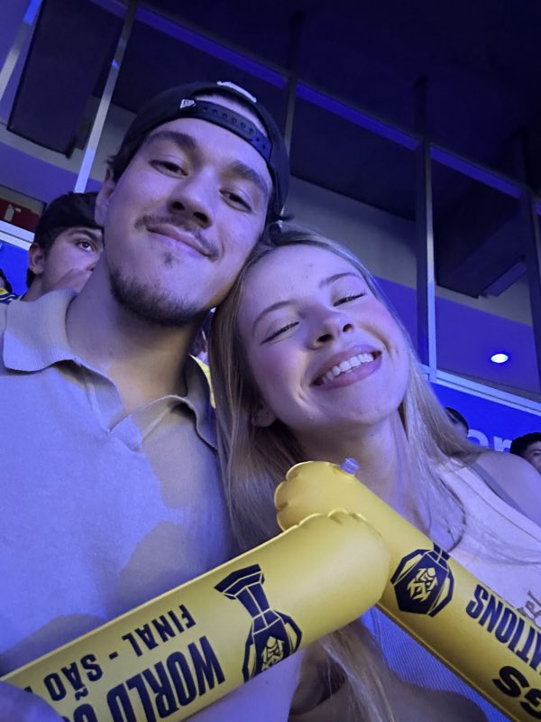
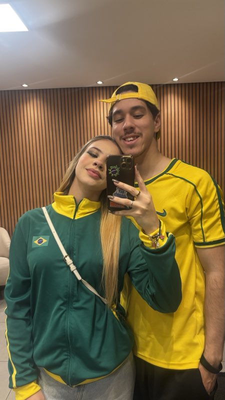
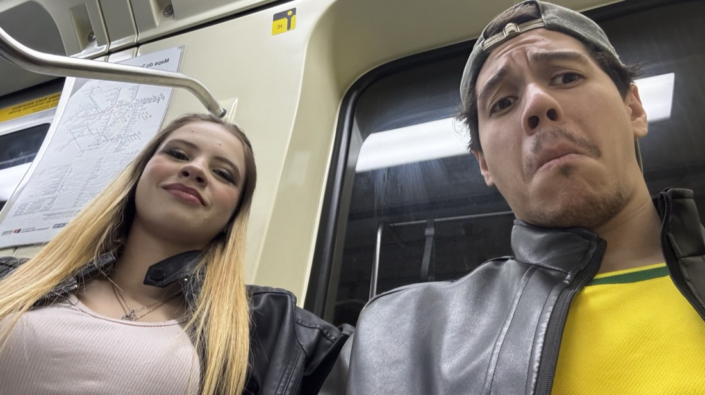

1 ano
a edição que eu passei 365 dias
morrendo de vontade de escrever
oiiii meu amor 👋
bem-vinda à Edição Especial de 1 Ano, a primeira da história dessa newsletter em que eu escrevo "faz um ano" e não tô mentindo, nem arredondando, nem me adiantando pro futuro igual eu sempre faço.
então já sabe como funciona: larga o que você tá fazendo, arruma um cantinho, arruma alguma coisa pra comer (e antes que você fale, sim, eu sei que você cozinha melhor do que qualquer coisa que eu ia sugerir aqui 🍳), e se prepara.
Um ano, amor.
UM ANO. 🤯
e continua subindo enquanto você lê isso.
desde 10 de agosto de 2025 🤍
Maré
aperta o play antes de continuar.
eu escrevi tudo isso aqui ouvindo ela.
— o que é, o que é: nasceu de madrugada e nunca mais foi dormir? 🌙
— o que é, o que é: tem 70 quilômetros no meio e mesmo assim tá sempre colado? 📍
— o que é, o que é: já quebrou uma vez e voltou mais forte do que era antes? 🔧
(dica: as três têm a mesma resposta, ela tem duas palavras, e você e eu somos as duas kkkkkk)
A igreja, e o tempo que ainda não era nosso
a gente se conheceu na igreja, você com 12 anos, eu com cinco a mais. o que na prática significava que eu não podia fazer absolutamente nada além de existir no mesmo prédio que você kkkkkk
e é louco pensar nisso hoje. tava tudo já escrito, só que ninguém tinha soltado o roteiro pra gente. a gente passou anos se cruzando ali, se falando normal, sem desconfiar de nada.
hoje eu entendo. não é que não ia rolar. é que ainda não era a hora. e todo aquele tempo que eu passei achando que eu tava atrasado na vida, eu na verdade tava só esperando você ficar pronta pra chegar.
O dia em que eu vi suas fotos e acabou
27 de maio de 2025. eu vi suas fotos.
e cara, eu queria muito ter uma explicação mais bonita que essa. alguma coisa mais digna, mais profunda, mais de "futuro marido". mas a verdade é vergonhosamente simples: eu olhei e não deu. simplesmente não deu. você é linda demais e eu sou um homem fraco 😵💫
aí a gente começou a conversar. e conversou. e conversou. todo santo dia. e olha, um ano depois eu fui atrás e não achei UM dia sequer que a gente tenha ficado sem se falar. nenhum. isso não é jeito de falar não, amor, isso é estatística 📊
e foi aí que apareceu o problema de verdade: a gente ri das mesmas coisas. aquele nosso humor de doido, as piadas que se eu contar pra outra pessoa ninguém entende e ainda me olha torto. eu não me apaixonei só por você não. eu me apaixonei por ter alguém que acha graça do mesmo absurdo que eu.
e quando eu descobri que você é inteligente, que toca violão, que toca guitarra, e que nunca largou a bateria 🥁 — aí eu entendi que o negócio era muito mais sério do que eu tava tratando. não era uma menina bonita. era uma garota incrível, e eu tinha acabado de me meter numa fila que eu não sabia se eu ia aguentar.
As três da manhã
amor, se um dia me perguntarem qual foi o exato momento em que eu soube que era você, eu não vou falar de beijo, nem de foto, nem de show.
eu vou falar daquele seu e-mail de quase três da manhã, dizendo que antes de você conseguir falar "a palavra", tinha uma coisa que você precisava fazer primeiro.
"eu orei tanto por alguém como você, mesmo sem saber que era você."você · 23.07.2025 · 02:44
e aí você me pediu cinco dias. cinco madrugadas, no mesmo horário, aquele horário maluco que pra gente sempre pareceu o fim do dia e não o começo. só orar e depois te avisar que orou. 🙏
Danyelle, eu tinha passado a vida inteira esperando alguém, e nenhuma menina nunca tinha me pedido nada nem parecido com aquilo. você podia ter pedido presente, tempo, declaração, prova. você pediu oração.
eu fiquei muito, mas muuuuito feliz naquele dia, e eu acho que eu nunca consegui te explicar direito o porquê. então vai agora: não foi a oração em si. foi eu perceber que você não tava me testando, você tava levando a gente pra Deus antes de levar pra qualquer outro lugar. mulher nenhuma tinha feito isso comigo.
um ano depois eu tenho a resposta daquelas cinco madrugadas, amor. era sim. era você. sempre foi. ✨

A coisa mais difícil que eu já fiz
pedir sua bênção pro seu pai e pra sua mãe.
mano, eu já entreguei projeto em cima da hora, eu já tive semana horrorosa, eu já passei noite sem dormir por causa de problema. nada chegou nem perto daquilo. eu ensaiei o que eu ia falar, eu travei na hora, eu esqueci metade.
mas eu fui, e eu fui porque uma coisa já tava decidida dentro de mim: eu enfrento o que for por você. e affs, de lá pra cá teve bastante coisa pra enfrentar, e eu não recuei uma vez sequer.
e no fim de tudo o seu pai olhou pra mim e falou que você é uma princesa 👑
eu peguei aquilo e transformei em ordem de serviço, amor. é pra vida toda, e eu tô cumprindo.
10.08.25
lembra que quando a gente tinha um mês eu ainda tava em choque de poder falar "minha namorada" em voz alta? que eu falava que ia usar a palavra amor até gastar?
então. um ano usando todo dia e não gastou. parece que essa aí não tem limite mesmo, e olha que eu testei bastante.
a parte engraçada é que naquele dia eu achava que aquilo era o ápice. era o topo. não tinha como melhorar. amor, aquele dia foi o pior dia do nosso relacionamento, porque todos os outros 364 vieram melhores kkkkkk 📈
A parte que eu não vou fingir que não teve
foi um ano de alto e baixo, amor. a gente terminou. a gente voltou.
e eu podia escrever isso tudo fingindo que foi lindo do começo ao fim, mas aí não ia ser eu, não ia ser você, e principalmente não ia ser a gente. a gente se irrita o tempo todo. a gente discute por bobagem. somos dois teimosos com opinião forte e 70 km no meio pra piorar tudo.
só que teve uma coisa que ficou escancarada nesse ano: toda vez o amor gritou mais alto. toda vez. a gente tenta ficar longe e simplesmente não consegue, é quase um defeito de fábrica nosso.
e é exatamente por isso que eu não tenho medo nenhum do ano 2. namoro que nunca apanhou é bonito, mas ninguém sabe quanto ele aguenta. o nosso já apanhou, já foi remendado, e continuou de pé. eu prefiro mil vezes o nosso 💪
e você tinha razão sobre a gente ser um filme, viu. só que eu revi o roteiro e cheguei numa conclusão: você não é a mocinha da comédia romântica não, amor. você é a comédia E a romântica. eu tô no elenco de apoio e tô muito bem servido assim kkkkk 🎬
As provas de que esse ano aconteceu mesmo



A Lista Oficial do 1 Ano
nas edições antigas eu conseguia listar umas 3 coisas. agora eu tenho um ano de convivência, então a lista cresceu e ainda ficou faltando espaço.
- 01 💎Sua persistência. essa é a primeira e não tem discussão. você insistiu na gente quando desistir era muito mais fácil e muito mais confortável. você insiste em falar comigo todo dia, inclusive nos dias em que eu tô insuportável, inclusive depois de a gente ter brigado. amor, qualquer um ama na parte boa. você escolheu ficar na parte ruim, e isso é a coisa mais bonita que já fizeram por mim.
- 02 😂Você faz piada o tempo todo. o TEMPO todo. não existe assunto sério o bastante pra te segurar por mais de dois minutos, e graças a Deus por isso. você pegou a minha vida, que era razoavelmente organizada e chata, e transformou num programa de humor sem hora pra acabar.
- 03 🧭Você me guia. essa aqui eu demorei pra sacar, e hoje eu acho que é a mais importante de todas. você me puxa pro lado certo sem nem parecer que tá fazendo isso, sem sermão, sem cobrança. você me faz ser um cara melhor sem nunca ter me pedido pra mudar, e isso é raro pra caramba.
- 04 🎸Você toca muito bem. três instrumentos e você não largou nenhum. e o pior de tudo é que você acha que isso não é grande coisa, o que só me deixa mais impressionado e um pouco irritado kkkkkk
- 05 🍳Você cozinha bem. eu sei que você vai rir dessa aqui ter entrado na lista romântica, mas eu tô falando muito sério. isso é cuidado que dá pra comer, e eu sou um homem faminto e emocionalmente carente, então pra mim conta dobrado.
- 06 🔊Sua risada. continua sendo o melhor barulho que existe. um ano inteiro de amostragem e nada subiu no ranking, nem chegou perto.
- 07 🦋Você é você, o tempo inteiro. você não faz versão editada pra ninguém. solta a frase aleatória, canta na frente de estranho, fala o que veio na cabeça. e num mundo onde todo mundo tá se controlando o tempo todo, ficar do lado de alguém que simplesmente é descansa a minha cabeça. nunca conserta isso, por favor.
Cartas lacradas
deixei três aqui. elas não vão a lugar nenhum, então guarda esse link. abre no dia certo.
abre quando você estiver com saudade
amor, se você abriu essa, então os 70 km tão pesando hoje.
então deixa eu te lembrar de uma coisa: em 365 dias a gente não passou um único dia sem se falar. nenhum. isso não é sorte, isso é escolha, e a gente fez essa escolha todo santo dia sem nem perceber.
a distância nunca ganhou de nós dois. hoje também não vai. me liga. 🤍
abre quando a gente estiver brigado
ok, então provavelmente eu fiz merda. ou você fez. ou os dois, o que é mais provável.
eu escrevi isso num dia calmo justamente pra você ler num dia que não tá. então presta atenção no que o eu-tranquilo tem pra falar: eu não vou embora. a gente já terminou uma vez e voltou mais forte, e desde então eu aprendi que o nosso problema nunca foi grande o suficiente pra ganhar da gente.
eu ainda tô aqui. sempre tô. e eu te amo mesmo irritado. 🤍
abre num dia ruim
você me falou uma vez que sempre que eu tivesse um dia difícil ia ter uma diva doidinha aqui pra falar besteira até eu rir.
hoje é o contrário, então senta aí que agora é a minha vez.
você é animada, você é a melhor do mundo, e você é o orgulho da minha vida — e isso continua verdade exatamente igual num dia em que você não tá conseguindo levantar da cama. seu valor não caiu hoje, amor. nem um pouquinho.
e se não der pra fazer nada hoje, tudo bem. a gente ora. 🙏
nas edições passadas o bônus foi pra sua testinha, e eu mantenho tudo o que eu falei sobre ela. mas o bônus dessa aqui vai pras suas mãos 🤲
porque num ano só essas mãos tocaram violão pra mim, seguraram baqueta, cozinharam, escreveram e-mail de madrugada, ficaram juntinhas às três da manhã orando por nós dois, e mesmo com essa agenda toda ainda sobrou espaço nelas pra segurar a minha.
são mãos ocupadíssimas, amor. e mesmo assim ainda tem um dedo ali sobrando pra uma coisinha. só tô comentando 💍
eu ia fazer com o seu nome, mas o Y me derrotou.
então vai com a palavra que eu mais falo no dia:
André Repórter
senta aí que o programa vai começar, roda a vinheta 🎙️
Repórter — boa noite! estamos ao vivo com ele de novo, um ano depois da última entrevista. André, como é chegar no primeiro aniversário?
Eu — olha, tô realizado. mas eu vou ser bem sincero com você: eu prometi na entrevista passada que noivado não tava tão longe. continuo devendo. mas agora o pai dela já me conhece, então eu diria que a situação tá bem encaminhada.
Repórter — mas teve término no meio do ano. como o senhor responde a isso?
Eu — teve, e eu não vou fugir da pergunta não. só que a gente voltou, e voltou melhor. namoro que nunca apanhou não sabe quanto aguenta. o meu já sabe, e isso me deixa mais tranquilo do que se nunca tivesse acontecido nada.
Repórter — a pergunta que não quer calar: depois de 365 dias, ela continua sendo a certa?
Eu — repórter, no primeiro dia eu achava. hoje eu sei. e tem diferença, viu. achar é sentimento. saber é um ano de dado coletado, testado e conferido.
Repórter — é isso, Brasil. encerramos com o homem que venceu no amor e que, pelo visto, vai ter que passar numa joalheria em breve 💍

As promessas do Ano 2
enfim. chegamos no fim da Edição Especial de 1 Ano.
eu sei que ficou gigante de novo, mas é que dessa vez eu tinha um ano inteiro pra tentar caber numa página só, e sinceramente não coube. faltou coisa. sempre falta.
um ano atrás eu era um cara que tinha visto suas fotos num 27 de maio e não tinha conseguido segurar. hoje eu sou um cara que conhece sua família, que já te ouviu cantar de pertinho, que já te viu com raiva de mim e ficou mesmo assim, que já orou de madrugada por nós dois, e que já sabe de cor como você fica quando tá quieta só me olhando.
a gente não fez um ano perfeito, amor. a gente fez um ano de verdade. e eu escolheria ele de novo inteirinho, com os baixos junto, sem tirar nada.
que venha a edição de 2 anos. e a de 5. e a de 10. e a de 50, quando a gente já tiver perdido a conta e eu tiver que escrever com a letra gigante porque nenhum dos dois vai estar enxergando mais nada kkkkkk 👵🧓
TE AMO
PRA CACETE
(um ano depois e a frase só ficou mais literal)
Atenciosamente,
Seu futuro marido
(versão 1 ano oficializada, e cada vez menos "futuro")
P.S. — você não é Copa do Mundo, mas eu esperaria quatro anos por você. e olha que eu esperei bem mais que isso, então considera pago ⚽
P.S.2 — você não é Jorge Vercillo, mas eu pagaria ingresso só pra te ouvir cantar 🎤
P.S.3 — uma vez você me falou que quando eu tivesse dia ruim ia ter uma doidinha aqui pra falar besteira até eu rir. cumpriu. um ano inteirinho. obrigado, mô. 🫶